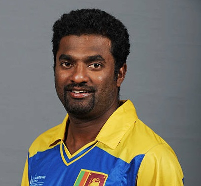

INTERNATIONAL RECORDS
MOST RUNS
- Sachin Tendulkar
- 34357 Runs

MOST WICKETS
- Muthiah Muralidaran
- 1347 Wickets
MOST SIXES
- Chris Gayle
- 553 Sixes
MOST HUNDREDS
- Sachin Tendulkar
- 100 Hundreds
MOST STUMPINGS
- MS Dhoni
- 195 Stumpings
MOST CATCHCES
- Mahela Jayawardhane
- 440 Catches
MATCH HIGHLIGHTS
NEWS FEED
Rishabh Pant was named 'Player of the Match' for his brilliant unbeaten century that helped India beat England by five wickets in the third ODI at Old Trafford in Manchester and seal the series 2-1. Coming in to bat with India in trouble at 21/2, Pant hit 125* to help India chase down the 260-run target with just under eight overs to spare. As the team celebrated after the post-match presentation ceremony, the 24-year-old was seen running to former Team India head coach Ravi Shastri with the champagne bottle he was given as his 'Player of the Match' award.
Jadeja takes two incredible boundary line catches as Livingstone, Buttler fall into Hardik's trap.
Ravindra Jadeja gave another example of why he is regarded among the best fielders in world by taking two sensational catches on the boundary line. Both happened in the 37th over of the game which was bowled by Hardik Pandya that saw England's dangerous pair of Jos Buttler and Livingstone depart.
England all-rounder Ben Stokes announced his retirement from One Day Internationals on Monday. He confirmed that the first ODI match against South Africa on Tuesday (July 19) will be his last. Stokes took the decision to manage his workload as he feels playing all three formats is unsustainable for him at the moment.
“I will play my last game for England in ODI cricket on Tuesday in Durham. I have decided to retire from this format. This has been an incredibly tough decision to make. I have loved every minute of playing with my mates for England. We have had an incredible journey on the way," Stokes said in a statement.
West Indies veteran Lendl Simmons has put a full stop on his international career by announcing his immediate retirement from cricket at the highest level.
Simmons announced the news via his sports agency 124notout, with the talented batter finishing his career with a total of 3,763 runs for West Indies from 144 matches over all three formats.

Glenn Phillips starred with the bat to lead New Zealand out of early trouble and Lockie Ferguson then closed the game with four wickets in the first T20I between New Zealand and Ireland in Belfast.
Wicketkeeper-batter and former West Indies Test skipper Denesh Ramdin has decided to retire from international cricket.
He will continue to play in franchise cricket. Ramdin represented West Indies in 74 Test matches, 139 ODIs and 71 T20Is. He scored 2898 runs in the longest format, with four centuries. He accumulated 2200 runs in ODIs with two centuries and scored a further 636 runs T20I cricket.
India'snarrow series triumph over England away from home has seen Rohit Sharma's side cling on to third place just ahead of Pakistan on the latest Men's ODI Team Rankings.
A maiden ODI century to Rishabh Pant helped India clinch a 2-1 series victory over England on Sunday and in the process ensured they held on to third spot behind New Zealand on the current rankings.
White-ball specialist Adam Zampa has been named to make his return to international cricket after he was included in Australia's 14-player squad for upcoming ODI series against New Zealand and Zimbabwe.
Zampa sat out the recent tour of Sri Lanka as he welcomed his first child into the world, but the talented leg-spinner has been named in a strong squad for the matches in Queensland in August and September.
This too shall pass. Stay strong. #ViratKohli pic.twitter.com/ozr7BFFgXt
— Babar Azam (@babarazam258) July 14, 2022
When asked to elaborate upon his tweet, Babar stated in his press conference ahead of the first Test against Sri Lanka, "I just feel that in the present situation Kohli needs support and to be backed. I tweeted wishing him the best because I know how a player feels when he is going through this period and he needs the support of everyone."
Kohli has recently struggled for form, leading to criticism in sections of the media surrounding his place in the Indian setup. Former Indian skipper Kapil Dev also suggested that India should pick players on form, and not their reputation. Missing the first ODI against England with a groin injury, Kohli made just 16 in the second match, which India lost by 100 runs at Lord's. It means the right-hander has now gone 77 consecutive international innings without reaching three figures, after scores of 1 and 11 in the T20I series and failures in the rescheduled fifth Test.
Kohli has recently struggled for form, leading to criticism in sections of the media surrounding his place in the Indian setup. Former Indian skipper Kapil Dev also suggested that India should pick players on form, and not their reputation. Missing the first ODI against England with a groin injury, Kohli made just 16 in the second match, which India lost by 100 runs at Lord's. It means the right-hander has now gone 77 consecutive international innings without reaching three figures, after scores of 1 and 11 in the T20I series and failures in the rescheduled fifth Test.
The star batter announced his retirement from the shortest form of the game after Bangladesh's 3-0 whitewash over West Indies in the ODI series.
Bangladesh opener Tamim Iqbal called time on his T20I career, announcing his retirement via Facebook.
In the aftermath of The Tigers' thumping series win over West Indies away from home, Tamim wrote on his official Facebook page: "Consider me retired from T20 internationals from today. Thanks everyone."
Having made his T20I debut in 2007.